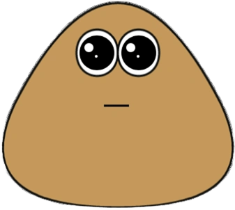

¿que es pou?
Pou es un juego para móviles lanzado en 2012, desarrollado por Paul Salameh. En el juego, el jugador cuida a una criatura virtual en forma de gota marrón llamada Pou.
El objetivo principal es cuidar y mantener feliz a Pou, realizando tareas como:
- Alimentarlo con distintos tipos de comida.
- Bañarlo y limpiarlo cuando se ensucia.
- Jugar minijuegos para ganar monedas.
- Personalizar su aspecto (ropa, color, accesorios).
- Decorar su casa con diferentes fondos y objetos.
Curiosidades
🥔 Pou no es una papa
Aunque muchos creen que Pou es una papa o un frijol, en realidad el creador nunca especificó qué tipo de criatura es. Simplemente dijo que es un “ser virtual adorable”.
🎮 Más de 20 minijuegos
Pou incluye una gran variedad de minijuegos: desde Sky Jump y Food Drop hasta Color Match o Pou Popper. Todos sirven para ganar monedas y comprar objetos.
SI QUIERES VER MAS CURIOSIDADES O INFORMARTE MAS SOBRE POU HAZ CLICK AQUI!